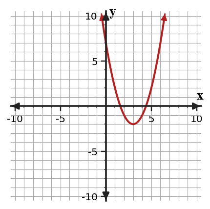

1.
Use the before-and-after graphs. Name the transformation shown and one key point that moved.

2.
Use the graph of the transformed quadratic. Write a possible equation in vertex form and identify the parent function.

3.
Choose the better evidence sentence for an exponential relationship and revise the weaker one.
- The outputs go up, so it is exponential.
- The outputs are multiplied by 1.5 each step, so the relationship is exponential growth.
4.
Decide which table could represent $y=ab^x$ for equally spaced x-values. For any table that could, identify a and b.
| $x$ | 0 | 1 | 2 | 3 |
|---|---|---|---|---|
| A | 9 | 18 | 36 | 72 |
| B | 9 | 14 | 19 | 24 |
| C | 9 | 6 | 4 | 2.67 |
5.
Convert $x^2-4x+1$ to vertex form.
6.
Solve or interpret the quadratic situation for Quadratic Formula. Show the algebra that supports your answer.
Use the discriminant to predict the number of real solutions for $2x^2+4x+7=0$.